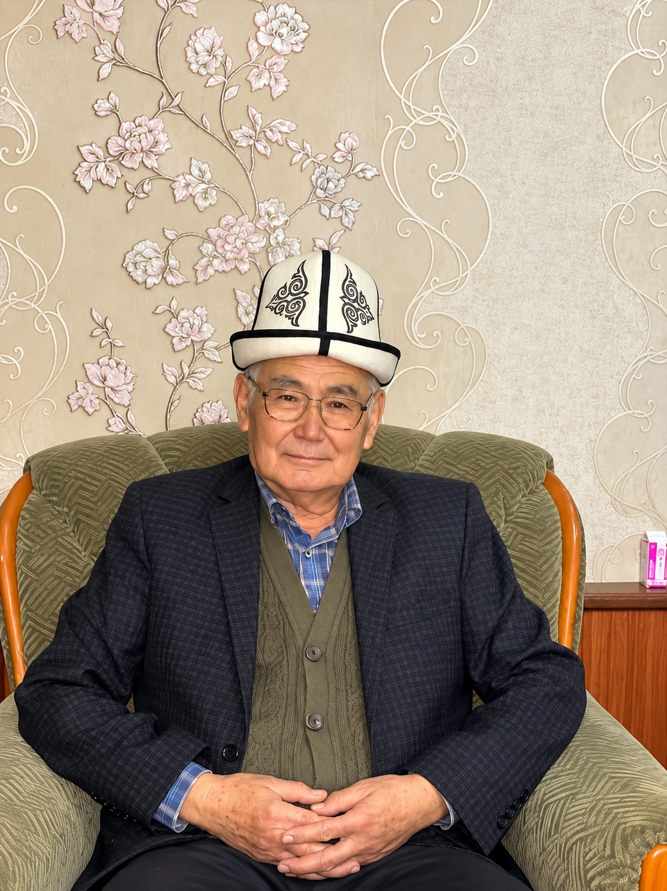

Урматтуу туугандар, куда-сөөк, достор жана жакындар!
Ардактуу атабыз Токуров Маматжалилдин 80 жаш юбилейине арналган мааракебиздин кадырлуу коногу болууга чакырабыз.

Урматтуу туугандар, куда-сөөк, достор жана жакындар!
Ардактуу атабыз Токуров Маматжалилдин 80 жаш юбилейине арналган мааракебиздин кадырлуу коногу болууга чакырабыз.
Картадагы даректи тактап коюңуз.